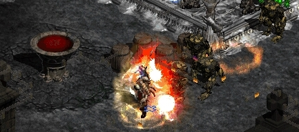

MEDIAN XL: ULTIMATIVE XI
HTML Documentation v2.5 pre-release

Release by Quirinus
HTML Documentation v2.5 pre-release for MXL: Ultimative XI
Here's finally the updated documentation. It contains everything your ordinary documentation contains, and more!
If you open this documentation you will also get a set of Tier 1 Throwing Knives!
This version should work well in most of the modern browsers (IE 9, Mozilla Firefox 20, Google Chrome 26, Opera 12).
Download
Or you can download the offline HTML version here:
HTML Documentation v2.5 pre-release for MXL: Ultimative XI.rar
Changes
- Updated/added everything related to Ultimative XI
- Updated/fixed item stats (there were a lot of them)
- Added Yshari set pieces table explaining from which monsters they drop
- Made all tables prettier: alternate row color, column name tooltips, row highlight
- Listed which characters must be used to cube tokens for the Valkayrie's Prime bow
- Added unique item special pictures when you mouse over them
- Added Gift Box and Jewelwords
- Updated the Skillpoint Planner for Ultimative XI and added loading from links
- Fixed spelling and other random mistakes
- Lots of general changes/upgrades
Help
If you see anything that's incorrect, incomplete or ill-formatted, please help by posting it on the forum so it can be corrected in the next version!
Thanks
I wish to thank everyone that contributed:
- Siddharth353, x01001010, MarcoNecroX, stoya and everyone who helped answer my numerous questions
- Brother Laz and MarcoNecroX for the amazing mods and much more
- Kambala and everyone who contribued towards the original offline documentation
- aahz and WolfieeifloW for the previous version of the documentation
- someone who I definitely forgot because there's a lot of people to thank <3
- the whole community for the support!
Previous version splash page.